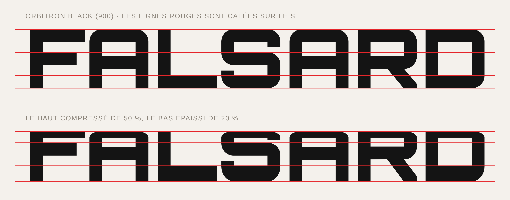
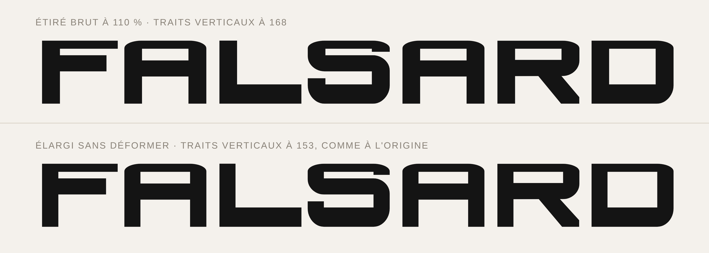
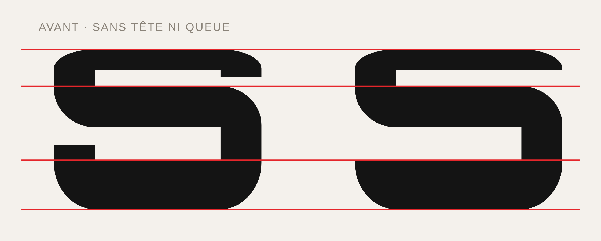
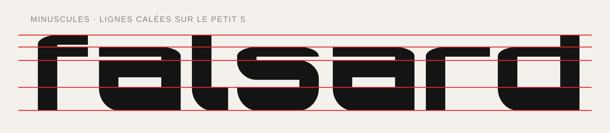

LaFleurStudio · 2026
FALSARD
Display géométrique techno, lourde en bas. Haut écrasé, bas épaissi, bien large. 10 graisses en tailles de t-shirt, du XXXS au XXXXL.
Les graisses
De 200 à 1100, en tailles de t-shirt. Le M est pile au milieu. Sous 400 et au-dessus de 900, on a poussé plus loin que la police d'origine. Chaque graisse a son italique, penchée de 12°.
Testeur
Clique et écris.
Sur le web, la XXXXL est une famille à part (voir « Télécharger »).
Caractères
Majuscules, minuscules, chiffres, accents, ponctuation, symboles. Et © ® ™, dessinés exprès.
Comment on l'a faite
Falsard part d'Orbitron. On l'a transformée à l'œil, avec des lignes rouges et des scripts Python.
On a pris Orbitron
Orbitron, de Matt McInerney (The League of Moveable Type). On lui a écrasé le haut, épaissi le bas, et on l'a élargie.
Écraser le haut, épaissir le bas
Quatre lignes rouges, calées sur le S : la base, le haut de sa barre du bas, le haut de sa barre du milieu, le haut des lettres.
En haut, tout est écrasé de 50 %. En bas, épaissi de 20 %. Le milieu ne bouge pas. Des lettres plus basses, lourdes en bas, fines en haut.

Élargir à 110 % sans déformer
Étirer épaissit les verticales, pas les horizontales : ça déforme. L'astuce : on prend les coordonnées horizontales d'une graisse plus fine, puis on étire. Pour la XXL : 153 unités, comme Orbitron, au lieu de 168 en étirement brut.

Couper la tête et la queue du S
Le S d'Orbitron a deux petits ergots : un sous la barre du haut, à droite, un sur la barre du bas, à gauche. Écrasés, ils faisaient moche.
Coupés au ras des barres, dans toutes les graisses. Pareil pour le s, le $, le 2, le 3 et le 5.

Les minuscules
Même recette, avec des lignes calées sur le petit s. Le f, le l et le d montent presque à la hauteur des majuscules.

10 graisses, en tailles de t-shirt
Orbitron va de 400 à 900. On l'a prolongée vers le fin (XXXS, XXS) et vers le gras (XXXL, XXXXL). Après 1100, les trous du S se bouchent : stop. Chaque graisse a sa graisse « source » pour les horizontales.
| Taille | Poids | Source horizontale | Trait visé | Étirement brut | Résultat |
|---|
Ajouter © ® ™
Orbitron n'avait ni ©, ni ®, ni ™. On les a faits avec les lettres de Falsard : le C et le R dans un O de la même graisse, un petit T et un petit M calés en haut des majuscules.
Télécharger
Libre et gratuite, même en commercial. Garde la licence avec la police.
Installation sur un site web
@font-face { font-family: "Falsard"; font-weight: 200;
src: url(Falsard-XXXS.woff2) format("woff2"); }
@font-face { font-family: "Falsard"; font-weight: 900;
src: url(Falsard-XXL.woff2) format("woff2"); }
/* … une règle par taille, de 200 (XXXS) à 1000 (XXXL) */
/* La XXXXL est aussi en 1000 : déclare-la à part */
@font-face { font-family: "Falsard XXXXL"; font-weight: 1000;
src: url(Falsard-XXXXL.woff2) format("woff2"); }
/* Italiques : famille « Falsard Italic », mêmes graisses, fichiers en …Italic.woff2. */